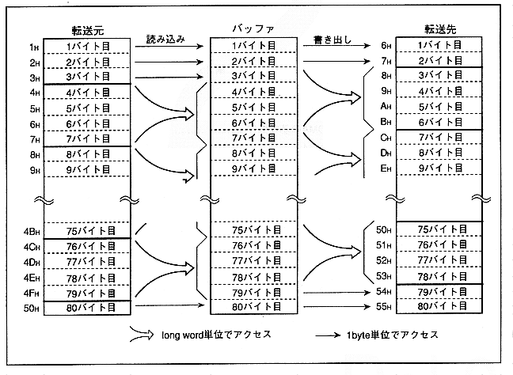

Figure 2.1 shows the basic operation of DMA. This DMA is basically longword access via the buffer of the DMA controller, but if the start address and end address are not on the longword boundary, read / write in bytes and execute DMA transfer I can.
Figure 2.1 shows an example of executing DMA transfer from transfer source address 1H to 50H to transfer destination address 6H to 55H. At the transfer source, the longword boundary is 4H, so 1H to 3H is read in bytes. The On the other hand, since the longword boundary is 8H at the transfer destination, the first 2 bytes of the read data are written in bytes from 6H to 7H. Furthermore, although the transfer source end address is 50H, the longword boundary is up to 4FH, so the 50H data is read in bytes. On the other hand, the transfer destination end address is 55H, but since the longword boundary is up to 53H, the last 2 bytes read are written in bytes from 54H to 55H.
Figure 2.1 Basic DMA transfer operation
